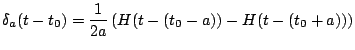
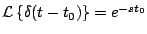
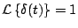
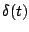
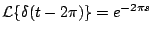

|
|
|
|
|Instituto Tecnológico de Costa Rica|Escuela de Matemática| M. Sc. Geovanni Figueroa M. |
1 2
3 4
5 6 7
8 9 10
11 12
13 14 15
16
|
|
Algunos sistemas mecánicos suelen estar sometidos a una fuerza externa (o a una tensión eléctrica en el caso de los circutitos eléctricos) de gran magnitud, que solamente actúa durante un tiempo muy corto. Por ejemplo, una descarga elétrica podría caer sobre el ala vibrante de un avión; a un cuerpo sujeto a un resorte podría dársele un fuerte golpe con un martillo, una pelota (de beisbol, de golf o de tenis) inicialmente en reposo, podría ser enviada velozmente por los aires al ser golpeada con violencia con un objeto como una bat de beisbol, un bastón de golf o una raqueta de tenis. La función impulso unitario puede servir como un modelo para tal fuerza.
donde
Observación: para valores pequeños de
Figura 1.8
y de aquí su nombre.
Demostración
En la práctica es conveniente trabajar con otro tipo de impulso llamado función de Dirac1.3
Observación: la función delta de Dirac, no es una función, realmente es lo que se conoce como una función generalizada (o distribución).
El siguiente teorema establece la transformada de Laplace de la función delta de Dirac.
Demostración

De donde tenemos que
con lo cual
Observación: a partir de
 es razonable concluir que
. Esto reafirma el hecho de que  no es una función ordinaria, puesto que se espera que
Ejemplo
Solución

|